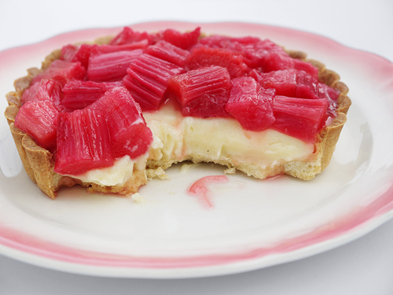

Rhubarb Tart With Yoghurt
Ingredients
- Puff pastry, slightly thawed ( 1 sheet )
- Eggs ( 2 )
- Rhubarb, stems cut into 6cm lengths ( 1 bunch )
- Raw sugar ( 4 tbs )
- oranges, zest and juice ( 2 )
- Greek Yoghurt ( 1 cup )
Instructions
- Preheat oven to 180°C.
- Grease a baking sheet. Top with pastry. Lightly push down on each corner with your thumb (to stop them rising too much) and score lightly with a knife around the edges to create a 1cm border. Lightly run the knife over the rest of the pastry in a cross hatch pattern to score it. Lightly brush the egg over pastry. Bake in oven for about 15 minutes or until golden.
- Using a palette knife transfer pastry to serving plate. Spoon over some yoghurt, rhubarb and top with a few spoonfuls of remaining yoghurt.
Calories: 680
